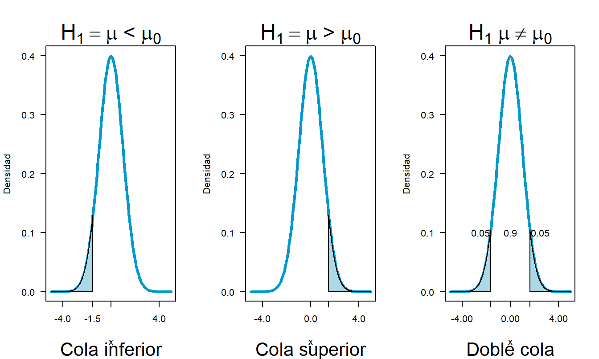
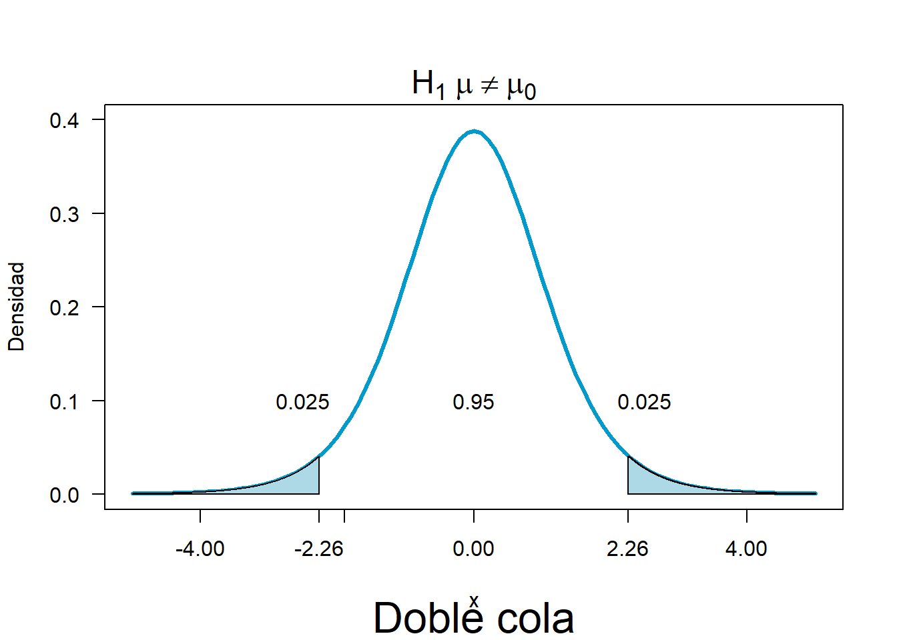
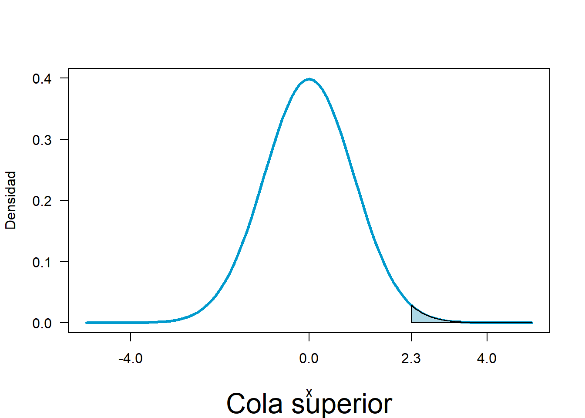
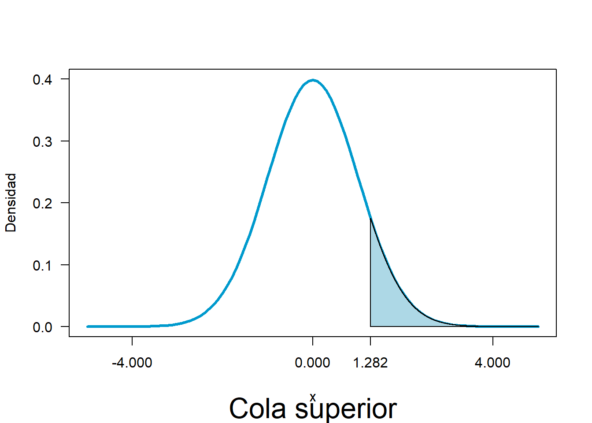
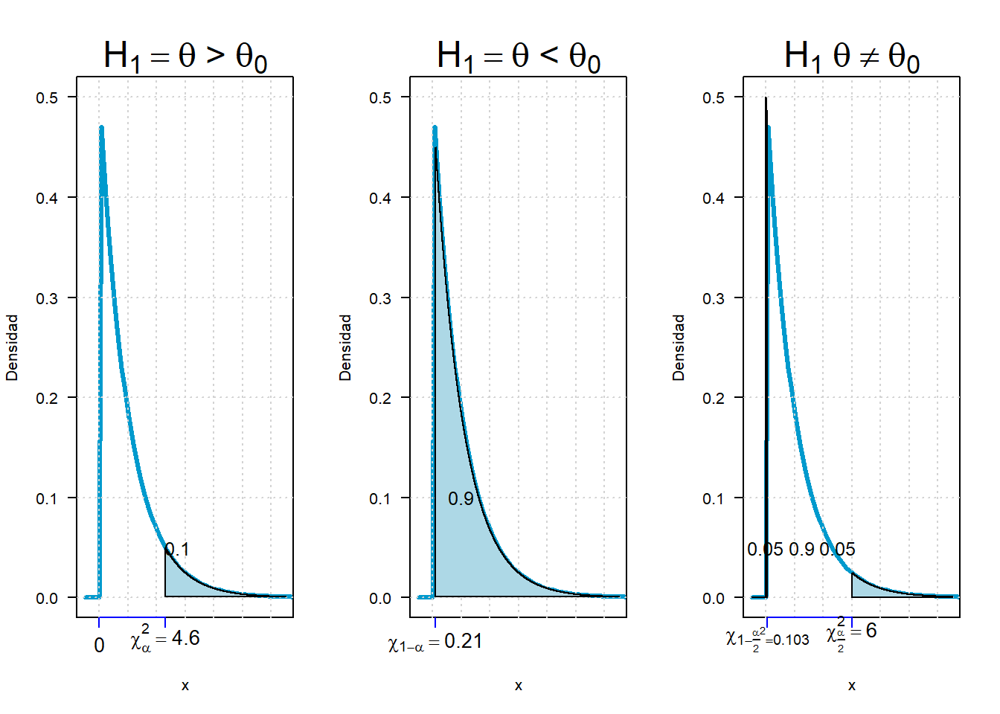
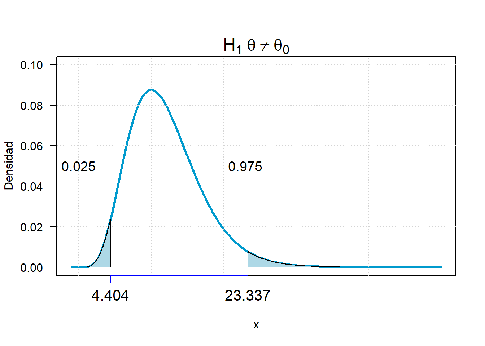

Pruebas de hipótesis
Una hipótesis estadística es una aseveración o conjetura con respecto a una o más poblaciones.
Tipos de hipótesis
Hipótesis nula
\(H_0\)= Hipótesis nula, status quo
\[\Large H_0:\theta=\theta_0\]
Hipótesis alternativa
\(H_1\)= Hipótesis alternativa, sospecha
cola superior
\[\Large H_0:\theta>\theta_0\] cola inferior
\[\Large H_0:\theta<\theta_0\] cola doble
\[\Large H_0:\theta\neq \theta_0\] Nota:
\(\theta\) puede ser cualquier estadístico como la media, la varianza, l adiferencia de medias o de proporciónes o razón de varianzas, lo que cambia es la distribución asociada, varía dependiendo del caso
Tipos de errores
| Decisión | \(H_0\) verdadera | \(H_0\) Falsa |
|---|---|---|
| Aceptar \(H_0\) | \(\checkmark\) | Error tipo II \(\beta\) |
| Rechazar \(H_0\) | Error tipo I \(\alpha\) | \(\checkmark\) |
Error tipo I falso negativo \(\alpha\): Rechazar \(H_0\), dado que es verdadera
Error tipo II falso positivo \(\beta\): Aceptar \(H_0\), dado que es falsa
Ejemplos

| Formulación | \(H_0\) | \(H_1\) | Falso positivo | Falso negativo |
|---|---|---|---|---|
| Una prueba de embarazo | No está embarazada | Está embarazada | Reportar que está embarazada cuando en realidad no está | Reportar que no está embarazada cuando en realidad lo está |
| Prueba de genero de un bebe | Feto femenino | Feto masculino | Reportar un feto masculino cuando en realidad es femenino | Reportar un feto femenino cuando en realidad es masculino |
Pasos para realizar una prueba de hipótesis
- Algunos videos de interés
Valor p
• Probabilidad de obtener un estadístico (igual al que se obtuvo o más extremo)
• Probabilidad de equivocarse rechazando la hipótesis nula
• Se contrasta con el nivel de significancia \(\alpha\)
Si valor p < \(\alpha\) Rechaza la hipótesis nula
Si valor p > \(\alpha\) Acepta la hipotesis nula
Pruebas de hipótesis para una muestra
PH para la media
Hipótesis nula:
\[H_0= \mu=\mu_0\]
Estadístico
Se pueden considerar dos tipos de estadísticos
| Normal | t student |
|---|---|
| \(\Large z=\frac{\bar x-\mu}{\sigma/\sqrt n}\) | \(\Large t=\frac{\bar x-\mu}{s/\sqrt n}\) |
Recuerde que:
| Estadístico | Muestral | Poblacional |
|---|---|---|
| Media | \(\bar x\) | \(\mu\) |
| Desviación | s | \(\sigma\) |
| Tamaño | n | N |
Hipótesis alternativa:
| Cola | \(H_1\) | RR (t student) | RR Normal Z |
|---|---|---|---|
| Superior | \(\mu>\mu_0\) | \(t\geq t_{\alpha,n-1}\) | \(Z\geq Z_\alpha\) |
| Inferior | \(\mu<\mu_0\) | \(t\leq -t_{\alpha,n-1}\) | \(Z\leq -Z_\alpha\) |
| DC sup | \(\mu \neq\mu_0\) | \(t\geq t_{\alpha/2,n-1}\) | \(Z\geq Z_{\alpha/2}\) |
| DC inf | \(t\leq -t_{\alpha/2,n-1}\) | \(Z\leq -Z_{\alpha/2}\) |

Ejemplo con la distribución t
Se desea verificar si un proceso de llenado de bolsas de café con 500 gr, está operando correctamente, para ello se toman muestras de tamaño 10 cada 4 horas, una muestra de bolsas tiene los siguientes resultados
| 502 | 501 | 497 | 491 | 496 | 501 | 502 | 500 | 489 | 490 |
|---|---|---|---|---|---|---|---|---|---|
vec=c(502,501,497,491,496,501,502,500,489,490)
mean(vec)## [1] 496.9sd(vec)## [1] 5.173651Está el proceso llenando bolsas conforme a lo que dice la envoltura?
Siguiendo los pasos de las pruebas de hipótesis
1. Definir las hipótesis
\[H_0:\quad \mu=500 gr\] \[H_1:\quad \mu \neq 500 gr\]
2. Definir el error tipo I denotado por alfa 0.05
3. Calcular el estadístico
Según la normal o según la t de student??
Es la varianza conocida??
Es el tamaño de muestra n>30??
\[\Large t=\frac{\bar x-\mu}{s/\sqrt n}\]
\[\Large t=\frac{496.9-500}{5.17/\sqrt 10}=-1.89\]
4. definir el valor p
\[P(t_9<-1.89)=0.046\]
como es una prueba a doble cola
\[Vp=0.046*2=0.092\]
5. Tomar desición
Como vp>0.05 Acepto \(H_0\) el proceso cumple con lo que dice la etiqueta 500 gr
4. Definir región de aceptación y rechazo
Como es una prueba a doble cola \[\alpha=0.05 \quad \alpha/2=0.025\] se definen los cuantiles que satisfacen esas condiciones.
\[t_{v=9,0.025}=-2.26\]
\[t_{v=9,0.975}=2.26\]

En R
t.test(vec,mu=500)##
## One Sample t-test
##
## data: vec
## t = -1.8948, df = 9, p-value = 0.09064
## alternative hypothesis: true mean is not equal to 500
## 95 percent confidence interval:
## 493.199 500.601
## sample estimates:
## mean of x
## 496.9Ejemplo con la distribución normal
Un fabricante de alarma de calor, afirma que la temperatura de activación del sistema es de 130 F. Una muestra de n=9 sistemas, cuando se somete a prueba, da una temperatura de activación promedio muestral de 131.08 F. Si la distribución de los tiempos de activación es normal con desviación estándar de 1.5 F, ¿contradicen los datos la afirmación del fabricante a un nivel de significancia 0.01
Siguiendo los pasos de las pruebas de hipótesis
Datos
\(\mu=130F \quad \bar x=131.08F \quad \sigma=1.5F\)
1. Definir las hipótesis
\[H_0:\quad \mu=130 F\] \[H_1:\quad \mu > 130 F\]
2. Definir el error tipo I denotado por alfa 0.01
3. Calcular el estadístico
Según la normal o según la t de student??
Es la varianza conocida??
Es el tamaño de muestra n>30??
\[\Large Z=\frac{\bar x-\mu}{\sigma/\sqrt n}\]
\[\Large Z=\frac{131.08-130}{1.5/\sqrt 9}=2.16\]
4. definir el valor p
\[P(Z>2.16)=0.0154\]
5. Tomar desición
Como vp>0.05 (0.0154 >0.01) Acepto \(H_0\), la temperatura de activación es igual a 130 F
4. Definir región de aceptación y rechazo
Se define el cuantil que satisface la condición. 0.01 en el lado superior equivalente al 0.99
\[Z_{0.99}=2.32\] 
PH para la proporción
Hipótesis nula:
\[H_0= p=p_0\]
Estadístico
\[\Large z=\frac{\hat p-p_0}{\sqrt{p_0*q_0/ n}}\] Recuerde que:
Hipótesis alternativa:
| Cola | \(H_1\) | RR Normal Z |
|---|---|---|
| Superior | \(p>p_0\) | \(Z\geq Z_\alpha\) |
| Inferior | \(p<p_0\) | \(Z\leq -Z_\alpha\) |
| DC sup | \(p \neq p_0\) | \(Z\geq Z_{\alpha/2}\) |
| DC inf | \(Z\leq -Z_{\alpha/2}\) |
Ejemplo
La obesidad es un problema creciente entre grupos de todas las edades. un estudio reportó que 1276 individuos en una muestra de 4115 adultos fueron encontrados obesos.
Una encuesta reveló que el 20% de los estadounidenses adultos se autoconsideraron obesos. ¿Sugieren los datos más recientes que la proporción verdadera de adultos obesos es más de 1.5 veces el porcentaje de la encuesta de autoevaluación?
Realice una prueba de hipótesis utilizando un nivel de significancia de 0.10.
Pasos
Datos
\[p=\frac{1276}{4115}=0.31\quad q=0.69\]
1. Definir las hipótesis
\[\Large H_0= p=0.3\] \[\Large H_1= p>0.3\]
2. Definir el error tipo I denotado por alfa 0.1
3. Calcular el estadístico
\[\Large z=\frac{\hat p-p_0}{\sqrt{p_0*q_0/ n}}=\frac{0.31-0.3}{\sqrt{0.3*0.7/ 4115}}=\]
\[z=\frac{0.31-0.3}{\sqrt{0.3*0.7/ 4115}}=\frac{0.01}{0.007}=1.4\] 4. definir el valor p
\[P(Z>1.4)=0.081\]
5. Tomar desición
Como vp<0.1 (0.081 < 0.1) Rechazo \(H_0\), la proporción de personas obesas es mayor del 30%.
4. Definir región de aceptación y rechazo Se define el cuantil que satisface la condición. 0.1 en el lado superior equivalente al 0.9
\[Z_{0.9}=1.282\]

PH para la varianza
Surgen situaciones que requieren inferencias acerca de la variabilidad,relacionando con la uniformidad de una población. por ejemplo la variabilidad de las calificaciones otorgadas por cierto profesor en determinado examen. Se esperaría que las puntuaciones tuvieran una varianza pequeña.
Se parte bajo el supuesto de la muestra proviene de una población que se distribuye normal.
Hipótesis nula:
\[\Large H_0= \sigma=\sigma_0^2\]
Estadístico
\[\Large\chi^2=\frac{(n-1)S^2}{\sigma_0^2}\]
Hipótesis alternativa:
| Cola | \(H_1\) | RR (Chi cuadrado) |
|---|---|---|
| Superior | \(\sigma>\sigma_0^2\) | \(\chi^2\geq \chi_{\alpha,n-1}\) |
| Inferior | \(\sigma<\sigma_0^2\) | \(\chi^2\leq \chi_{1-\alpha,n-1}\) |
| DC sup | \(\sigma\neq \sigma_0^2\) | \(\chi^2\geq \chi_{\alpha/2,n-1}\) |
| DC inf | \(\chi^2\leq \chi_{\alpha/2,n-1}\) |

Ejemplo
Datos históricos indican que la varianza de las mediciones sobre una lámina metálica es de 0.18 pulgadas cuadradas.Las mediciones realizadas por un inspector nuevo podrían tener una varianza mayor o menor. Si un nuevo inspector mide 40 laminas grabadas con una varianza de 0.13 pulgadas cuadradas, pruébese con un nivel de significancia de 0.05 si el inspector realiza mediciones satisfactorias.
Solución
Datos
n=13, \(S^2=0.13\), \(\sigma^2=0.18\)
1. Juego de hipótesis
\[\Large H_0= \sigma^2=0.18\] \[\Large H_1= \sigma^2 \neq 0.18\]
2. Definir el error tipo I denotado por alfa 0.05
3. Estadístico
\[\Large\chi^2=\frac{(n-1)S^2}{\sigma_0^2}=\frac{(39)0.13}{0.18}=28.16\]
4. Definir el valor p
\[P(\chi^2_{12}>28.16)=(0.0052)*2 colas=0.0104\] vp=0.0104
5. Desición
Como vp <0.05 (0.0104 < 0.05) Rechazo \(H_0\), la proporción de laminas es diferente de 0.18
4. Definir región de aceptación y rechazo

Pruebas de hipótesis para dos muestras
PH diferencia de medias
Se prueba si dos muestras tienen igual promedio o si alguna de ellas es mayor que otra
Ambas muestras son aleatorias e independientes y las poblaciones de las cuales provienen se distribuyen normal
Sean \(X_1,X_2,...X_n\) y \(Y_1,Y_2,...Y_n\) muestras aleatorias que se obtienen de dos distribuciones normales independientes con media\(\mu_x\) y \(\mu_y\)
Se identifican 3 casos:
| Varianzas | Estadístico | Varianza |
|---|---|---|
| Iguales pero desconocidas | \[t_{n_1+n_2-2}=\frac{(\bar X_1-\bar X_2)-(\mu_1-\mu_2)}{s_p\sqrt{\frac{1}{n_1}+\frac{1}{n_2}}}\] | \[s^2_p=\left[\frac {(n_1-1)s_1^2+(n_2-1)s_2^2}{n_1+n_2-2} \right]\] |
| Diferentes y desconocidas | \[t_{n_1+n_2-2}=\frac{\bar x_1-\bar x_2-(\mu_1-\mu_2)}{\sqrt{\frac{s_1^2}{n_1}+\frac{s_2^2}{n_2}}}\] | |
| Conocidas | \[Z=\frac{\bar x_1-\bar x_2-(\mu_1-\mu_2)}{\sqrt{\frac{\sigma_1^2}{n_1}+\frac{\sigma_2^2}{n_2}}}\] |
Hipótesis nula: \[H_0=\mu_x-\mu_y=\mu_d\] Donde \(\mu_d=0\) representa la diferencia que se desea probar entre los valores desconocidos de las medias poblacionales,si \(\mu_d=0\) significa que: \[H_0=\mu_x=\mu_y\]
Hipótesis alternativa:
| Cola | \(H_1\) | RR (t student) | RR Normal Z |
|---|---|---|---|
| Superior | \(\mu_x-\mu_y>\mu_d\) | \(t\geq t_{\alpha,n-1}\) | \(Z\geq Z_\alpha\) |
| Inferior | \(\mu_x-\mu_y<\mu_d\) | \(t\leq -t_{\alpha,n-1}\) | \(Z\leq -Z_\alpha\) |
| DC sup | \(\mu_x-\mu_y\neq\mu_d\) | \(t\geq t_{\alpha/2,n-1}\) | \(Z\geq Z_{\alpha/2}\) |
| DC inf | \(t\leq -t_{\alpha/2,n-1}\) | \(Z\leq -Z_{\alpha/2}\) |
Ejemplos
Ejemplo con varianzas iguales pero desconocidas Se ha desarrollado una nueva cura para el cemento Pórtland Se efectúan ensayos para determinar si la nueva cura tiene un efecto (positivo o negativo) en la resistencia Se ha producido un lote sometido a ambas curas, la estándar y la experimental Las resistencias a la compresión (psi)son las siguientes:
Cura
| Valor | estándar | experimental |
|---|---|---|
| 4.25 | 4.12 | |
| 4.22 | 3.95 | |
| 4.35 | 3.9 | |
| 4.07 | 3.57 | |
| 4.55 | 3.87 | |
| 4.45 | 3.82 | |
| 4.15 | 3.97 | |
| 4.55 | 3.8 | |
| 4.25 | ||
| 3.8 | ||
| media | ||
| desv | ||
| n |
Con un IC de razón de varianzas pruebe si hay igualdad en las varianzas
Pruebe el efecto en la resistencia del cambio de cura a un nivel de significancia de α= 0.05.
Ejemplo con varianzas iguales pero conocidas
Un fabricante comparó la productividad de trabajadores de ensamblaje para dos tipos de horarios semanales de trabajo de 40 horas Uno cuatro días de 10 horas (horario 1 y el horario estándar de 5 días de 8 horas (horario 2 Se asignaron 15 trabajadores a cada horario de trabajo y se registro el número de unidades armadas durante una semana las medias (en cientos de unidades) y las varianzas muestrales se indican a continuación
| Estadística | H1 | H2 |
|---|---|---|
| n | 15 | 15 |
| Media | 43.1 | 44.6 |
| Varianza | 4.28 | 3.89 |
¿Proporcionan los datos evidencia para indicar una diferencia en la productividad media para los dos horarios de trabajo? Haga la prueba con un nivel de significancia α=0.05
Diferencia de proporciones
Se quiere comparar dos muestras cuyo parámetro de interés es la proporción, deseamos conocer si pertenecen a la misma población o corroborar si la diferencia entre estas excede cierto porcentaje
Hipótesis nula: \[H_0=\quad p_x-p_y=p_0\] Donde \(p_0=0\) representa la diferencia que se desea probar entre los valores desconocidos de las medias poblacionales,si \(\mu_d=0\) significa que: \[H_0=p_x-p_y=p_0\]
Hipótesis alternativa:
| Cola | \(H_1\) | RR Normal Z |
|---|---|---|
| Superior | \(p_x-p_y>p_0\) | \(Z\geq Z_\alpha\) |
| Inferior | \(p_x-p_y<p_0\) | \(Z\leq -Z_\alpha\) |
| DC sup | \(p_x-p_y\neq p_0\) | \(Z\geq Z_{\alpha/2}\) |
| DC inf | \(Z\leq -Z_{\alpha/2}\) |
Estadístico
\[Z=\frac{(\hat p_1-\hat p_2)-(P_1-P_2)}{\sqrt{\frac{\hat p_1 \hat q_1}{n_1}+\frac{\hat p_2 \hat q_2}{n_2}}} \]
\(\hat p_1,\hat p_2\) son las proporciones estimadas
\(p_1,p_2\) son las proporciones reales
Ejemplo
Un genetista esta interesado en la proporción de machos y hembras de una población que tiene cierta enfermedad menor en la sangre. En unamuestra aleatoria de 100 machos se encuentran 31 afectados mientras que solamente 24 de 100 hembras presentan la enfermedad Se puede concluir, con un nivel de significancia de 0.01 que la proporción de machos afectados por esta enfermedad de la sangre es mayor que la proporción de hembras también afectadas?(Walpole V Myers,1989
Razón de varianzas
- Las poblaciones muestreadas son normales e independientes La estructura de los datos es:
\(x_1,...,x_n\) muestra aleatoria de \(N(\mu_x,\sigma^2)\)
\(y_1,...,y_n\) muestra aleatoria de \(N(\mu_y,\sigma^2)\)
Hipótesis nula: \[H_0=\sigma^2_x=\sigma^2_y\] Escrito de otra manera: \[H_0=\frac{\sigma^2_x}{\sigma^2_y}=1\]
Hipótesis alternativa:
| Cola | \(H_1\) | RR F |
|---|---|---|
| Superior | \(\frac{\sigma^2_x}{\sigma^2_y}>1\) | \(F \geq F_{\alpha,n_1-1,n_2-1}\) |
| Inferior | \(\frac{\sigma^2_x}{\sigma^2_y}<1\) | \(F \leq F_{\alpha,n_1-1,n_2-1}\) |
| DC sup | \(\frac{\sigma^2_x}{\sigma^2_y}\neq1\) | \(F \geq F_{\alpha/2,n_1-1,n_2-1}\) |
| DC inf | \(F \leq F_{\alpha/2,n_1-1,n_2-1}\) |
Estadístico
\[F=\frac{S_x^2}{S_y^2}\] Ejemplo
En un experimento acerca de la contaminación del aire, se comparan dos tipos de instrumentos para medir la cantidad de monóxido de sulfuro en la atmósfera Se desea determinar si los dos tipos de instrumentos producen mediciones que tienen la misma variabilidad Se registraron las siguientes lecturas para los dos instrumentos Suponiendo que las distribuciones de las poblaciones están distribuidas en forma normal, probar la hipótesis planteada con un nivel de significancia de a 0.02
| Instrumento | A | B |
|---|---|---|
| 0.86 | 0.87 | |
| 0.82 | 0.74 | |
| 0.75 | 0.63 | |
| 0.61 | 0.55 | |
| 0.89 | 0.76 | |
| 0.64 | 0.78 | |
| 0.81 | 0.69 | |
| 0.68 | 0.57 | |
| 0.65 | 0.53 | |
| media | ||
| desv |